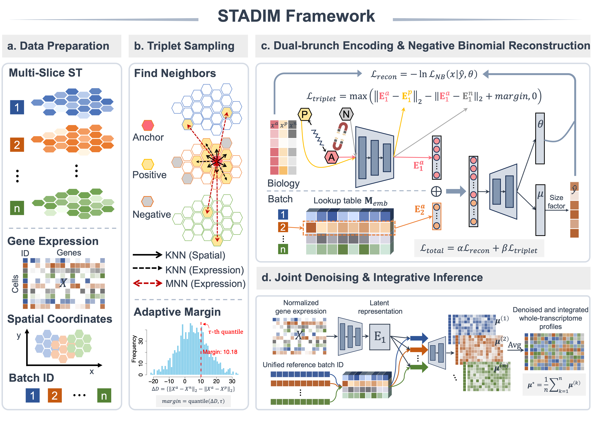

Welcome to STADIM’s documentation!
STADIM: Adaptive Deep Metric Learning for Denoising and Integration of Multi-Slice Spatial Transcriptomics
- Tutorial 1: Denoising on single-slice DLPFC data from 10x Visium
- Tutorial 2: Vertical denoising and integration on DLPFC multi slices from 10x Visium
- Tutorial 3: Horizontal denoising and integration on Mouse Brain dataset from 10x Visium
- Tutorial 4: Cross-platform denoising and integration of MOB datasets
- Tutorial 5: Corss-disease states denoising and integration of STARmap PLUS datasets for AD
- Tutorial 6: Scalability Analysis on Million-scale Visium HD Datasets
Overview of STADIM
{kind=link}

a, Data preparation. STADIM takes multi-slice joint ST data as input, including a combined gene expression matrix, spatial coordinates, and batch IDs for all spots. b, Triplet sampling strategy: for each anchor spot, within-slice and cross-slice positives are identified based on spatial and transcriptomic similarity, while negatives are randomly sampled from non-neighboring spots within the same slice. Utilizing the input data, an adaptive margin (τ-th quantile) is precomputed from triplet distance distributions to guide training. c, Dual-branch encoding and NB reconstruction. A dual-branch encoder architecture separates biological signals from technical variation: the biology branch learns low-dimensional embeddings that capture intrinsic gene expression patterns, while the batch branch encodes batch-specific features via a lookup table. The concatenated representations are decoded to estimate parameters of an NB distribution. d, Joint denoising and integrative inference. During inference, embeddings are decoded across all batch IDs under a unified reference, and predictions are averaged to generate a batch-corrected, denoised, and high-fidelity transcriptome-wide expression matrix.
Installation
# Create a new environment
conda create -n stadim python=3.9 -y
conda activate stadim
# Install STADIM directly from GitHub
pip install git+https://github.com/xiaoshutong273/STADIM.git
# To use the environment in jupyter notebook, add python kernel for this environment.
pip install ipykernel
python -m ipykernel install --user --name=STADIM